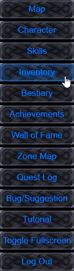
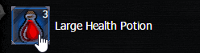
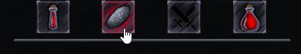

Inventory Screen

The inventory screen is where you are able to see all the loot and equipment you have collected in your travels. To get information about any item just hover your mouse over them and the details for that item will appear in the bottom right of the screen in the information panel. The inventory is divided into five different tabs to keep things organized, the tabs we will be looking at here are the Usable Items tab, Inventory tab, and Combat Items tab.
The Usable Items tab is where you come to use items outside of combat. To use an item simplly find it on your Usable tab and double click on it, the results of the use will appear near the top of the screen.

The Equipment tab shows all the equipment you have found, as well as what you have currently equipped. Unlike the other tabs this tab is filterable by clicking any item type from the row of buttons under your equipment slots. To equip an item double click on it at the bottom, and to unequip it, double click on it in your player's equipped slot.
The Combat Items tab allows you to equip up to four combat items to bring into battle with you, to equip an item double click it from the bottom, and to unequip it again double click it on your combat bar.
